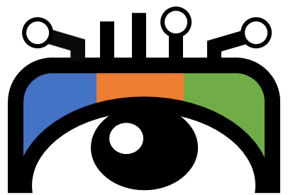
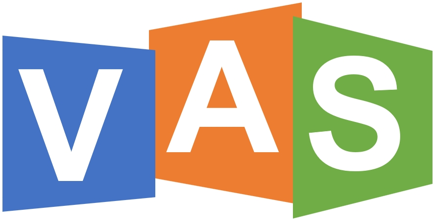
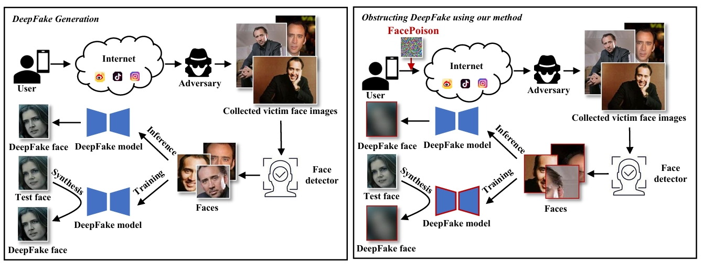
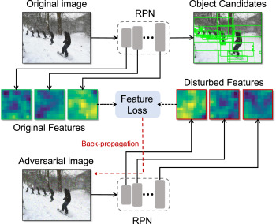
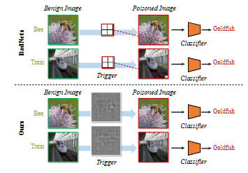
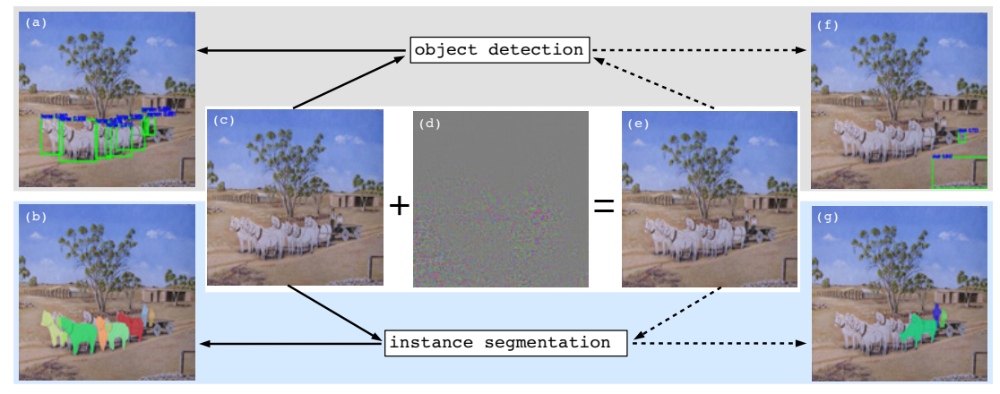
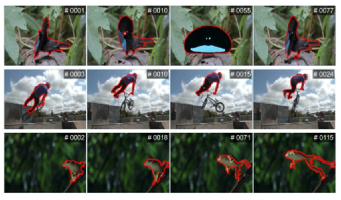
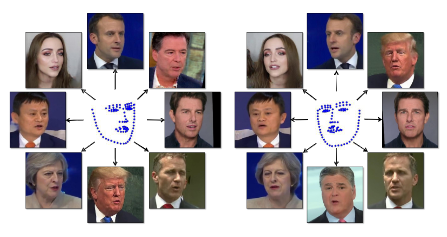
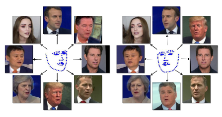

Vision Analysis & Security Lab
多媒体取证
- 人脸鉴伪技术: 深度伪造技术可生成高度逼真的虚假人脸，并被用于虚构公众人物言论、经济诈骗等非法行为，对个人隐私和社会安全构成严重威胁。人脸鉴伪技术在深度伪造检测领域发挥关键作用，是保障人工智能安全发展的重要研究方向。
- 图像篡改检测技术: 图像篡改技术（如复制-粘贴、拼接、对象移除）严重影响图像的可信度，并可能引发安全问题。图像篡改检测技术的研究对于保障视觉信息的真实性至关重要。



深度模型安全
- 对抗性攻防: 深度神经网络（DNN）的脆弱性对安全应用（如视频监控、计算机视觉任务）构成威胁。本研究方向包括对抗样本攻击DNN模型的生成方法，以及针对这些攻击的防御技术。
- 后门攻防: 在DNN中植入后门可能影响模型的预测，导致安全隐患并危及供应链信任。本研究方向致力于检测和防御DNN后门攻击，确保模型安全性。




计算机视觉
- 图像/视频的物体检测、跟踪、语义分割以及水下视觉技术: 物体检测、跟踪和语义分割等任务在许多实际应用中至关重要，例如自动驾驶、人脸识别和全景分析。水下视觉技术包括海洋动植物的视觉观测、水下三维重建以及水下图像增强等，这些技术在海洋研究和探测中具有重要作用。


 
